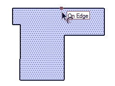

Offset
Tool
Create copies of lines at a uniform distance from originals.
Tool Operation
Click on a face.
Move cursor.
Click to finish offset operation.
Esc = Cancel operation.
Modifier Keys
Alt = Toggle Allow/Trim Overlap
Click to learn about more advanced operations...